Scratch es un lenguaje de programación visual diseñado para enseñar los conceptos básicos de la programación de una manera accesible y divertida. A diferencia de otros lenguajes de programación, Scratch utiliza bloques gráficos que se arrastran y sueltan para crear scripts, lo que lo convierte en una herramienta ideal para principiantes, especialmente niños. Este entorno permite a los usuarios crear animaciones, juegos e historias interactivas sin necesidad de escribir líneas de código, facilitando así la introducción a la programación y al pensamiento computacional.
Scratch fue desarrollado por el MIT Media Lab en el año 2003, bajo la dirección de Mitchel Resnick. El propósito inicial del proyecto era crear una herramienta que permitiera a los jóvenes aprender a programar de manera intuitiva y creativa. Su desarrollo se centró en ofrecer un entorno donde la programación fuera accesible y motivadora, al tiempo que se fomentara la resolución de problemas y la experimentación. Desde su lanzamiento, Scratch ha evolucionado para convertirse en una plataforma global que ha sido traducida a más de 70 idiomas y cuenta con millones de usuarios en todo el mundo.

El principal enfoque de Scratch es educativo. Está diseñado para enseñar los fundamentos de la programación de manera progresiva, facilitando la comprensión de conceptos como secuencias, bucles, condicionales y eventos. Scratch es utilizado ampliamente en escuelas y programas educativos como una herramienta para introducir a los estudiantes en la programación desde una edad temprana, permitiendo que aprendan de forma autónoma y creativa. Scratch no solo enseña programación, sino que también fomenta el pensamiento lógico y la creatividad, convirtiéndose en una plataforma que empodera a los jóvenes a explorar, crear y compartir sus propias ideas tecnológicas.

Scratch utiliza una interfaz visual donde los usuarios construyen programas arrastrando y soltando bloques de código en lugar de escribirlo. Los bloques están categorizados por colores según su función: movimiento, apariencia, sonido, control, sensores, y más. Este sistema hace que sea fácil de entender cómo se estructuran los programas y cómo los diferentes bloques interactúan entre sí. Cada bloque encaja con otros como si fueran piezas de un rompecabezas, lo que permite crear scripts lógicos sin necesidad de memorizar sintaxis complejas. Esta simplicidad permite que tanto niños como adultos puedan empezar a programar en Scratch rápidamente.
Con Scratch, los usuarios pueden crear una amplia variedad de proyectos interactivos, desde juegos y animaciones hasta simulaciones. La creación de estos proyectos implica combinar diferentes bloques de código para controlar personajes (sprites) y escenarios. Los bloques de código permiten mover personajes, reproducir sonidos, cambiar su apariencia o hacer que interactúen con otros elementos en la escena. Estos proyectos son totalmente personalizables y pueden incluir elementos como bucles y condicionales, lo que permite a los usuarios aprender de forma progresiva mientras desarrollan su creatividad. Además, los proyectos pueden ser compartidos con otros usuarios de la plataforma Scratch, fomentando la colaboración y el aprendizaje entre pares.

Introducción a la programación Scratch es una herramienta ideal para introducir a los niños y principiantes en el mundo de la programación. Al ser un lenguaje visual basado en bloques, permite que los usuarios aprendan los conceptos fundamentales de la programación como secuencias, bucles y condicionales, sin la necesidad de escribir código. A través de la creación de juegos, animaciones y simulaciones, los usuarios adquieren una comprensión intuitiva de cómo funcionan los programas. Desarrollo de habilidades de resolución de problemas Uno de los mayores beneficios de aprender a programar con Scratch es el desarrollo de la capacidad de resolver problemas. A medida que los usuarios construyen sus proyectos, deben aprender a descomponer problemas grandes en partes más pequeñas y manejables. Esta habilidad es fundamental tanto en la programación como en otras disciplinas, ya que fomenta el pensamiento crítico y la lógica. Fomento de la creatividad Scratch no solo enseña programación, sino que también fomenta la creatividad. Los usuarios pueden crear sus propios juegos, contar historias interactivas o desarrollar animaciones personalizadas. La plataforma les da la libertad de experimentar con diferentes bloques de código para ver cómo sus ideas cobran vida, promoviendo así una exploración creativa sin límites. Herramienta educativa Scratch es ampliamente utilizado como una herramienta educativa en aulas de todo el mundo. Profesores de diversas disciplinas lo emplean para enseñar no solo programación, sino también conceptos de ciencias, matemáticas y arte. Por ejemplo, los estudiantes pueden crear simulaciones matemáticas o animaciones que explican fenómenos científicos, lo que les ayuda a aprender de manera práctica y entretenida.

Aprendizaje accesible Scratch es completamente gratuito y está disponible en línea, lo que lo convierte en una herramienta accesible para cualquier persona con acceso a internet. No se necesita ningún software especializado, y su interfaz intuitiva permite que tanto niños como adultos puedan comenzar a aprender programación de forma rápida y sencilla. Esta accesibilidad ha hecho que Scratch sea popular en escuelas, hogares y centros comunitarios en todo el mundo. Desarrollo del pensamiento computacional Scratch enseña a los usuarios a desarrollar el pensamiento computacional, es decir, la capacidad de pensar de manera lógica y estructurada para resolver problemas. A medida que los usuarios crean proyectos, aprenden a identificar patrones, descomponer tareas complejas en pasos simples y diseñar soluciones eficientes. Estas habilidades son aplicables más allá de la programación, beneficiando a los estudiantes en muchas áreas de su vida académica y personal. Plataforma colaborativa Una de las características más destacadas de Scratch es su plataforma colaborativa, que permite a los usuarios compartir sus proyectos con una amplia comunidad en línea. Los miembros de la comunidad pueden explorar proyectos creados por otros usuarios, remixes de proyectos existentes y colaborar en proyectos conjuntos. Esta función fomenta un ambiente de aprendizaje social, donde los usuarios pueden inspirarse mutuamente y aprender de los trabajos de los demás. Fomenta la experimentación Scratch anima a los usuarios a experimentar, probar nuevas ideas y aprender de sus errores. La estructura de bloques permite realizar cambios y ajustes sin temor a cometer errores graves, lo que alienta una actitud de prueba y error que es fundamental para el aprendizaje. Los usuarios tienen la libertad de explorar diferentes enfoques y ver los resultados de inmediato, lo que refuerza el aprendizaje práctico y la innovación.
Scratch en el ámbito educativo Uso en escuelas y programas educativos Scratch se ha convertido en una herramienta fundamental en muchas escuelas y programas educativos de todo el mundo. Gracias a su enfoque visual y amigable, los educadores pueden integrar Scratch en sus planes de estudio para enseñar programación a estudiantes desde temprana edad. No solo facilita el aprendizaje de conceptos tecnológicos, sino que también apoya el desarrollo de habilidades críticas como el pensamiento lógico y la creatividad. Se utiliza en materias como ciencias, matemáticas, arte y tecnología, proporcionando a los estudiantes una forma práctica y atractiva de aprender conceptos abstractos. A través de proyectos interactivos, los estudiantes pueden explorar temas complejos de una manera que resulta más comprensible y divertida. Proyectos colaborativos Uno de los grandes beneficios de Scratch en el aula es su capacidad para fomentar el trabajo en equipo. Los estudiantes pueden colaborar en proyectos conjuntos, compartiendo ideas y combinando sus habilidades para crear soluciones. Esta metodología no solo enseña programación, sino también el valor de la colaboración y la resolución conjunta de problemas, lo que refuerza habilidades sociales y cognitivas. Scratch como herramienta interdisciplinar Scratch no se limita solo a la enseñanza de la programación. Su versatilidad permite que los educadores lo utilicen como una herramienta interdisciplinar para enseñar una amplia variedad de materias. Por ejemplo, los profesores de ciencias pueden crear simulaciones interactivas, mientras que los de matemáticas pueden diseñar ejercicios que ayuden a los estudiantes a visualizar problemas complejos. Además, el uso de Scratch en proyectos de arte o narrativa digital permite que los estudiantes exploren su lado creativo mientras aprenden a programar, creando así una experiencia educativa integral que mezcla tecnología, lógica y expresión artística. Cómo empezar con Scratch Registro y acceso Comenzar con Scratch es muy sencillo. Para acceder a la plataforma, solo necesitas crear una cuenta gratuita en scratch.mit.edu. Una vez registrado, tendrás acceso a todas las herramientas de creación de proyectos y a la comunidad de Scratch, donde podrás compartir tus proyectos y explorar los de otros usuarios. Exploración de proyectos existentes Una de las mejores maneras de aprender Scratch es explorar los proyectos existentes creados por otros usuarios. Al navegar por la galería de proyectos, puedes encontrar inspiración y observar cómo otros han usado los bloques de Scratch para crear animaciones, juegos y simulaciones. Puedes modificar estos proyectos o “remixarlos” para crear tu propia versión, lo que es una excelente forma de aprender y experimentar con diferentes conceptos. Primeros pasos con Scratch Para empezar a crear tu propio proyecto en Scratch, sigue estos pasos básicos: Crear un personaje (sprite): En el editor de Scratch, puedes seleccionar o diseñar un sprite que será el personaje principal de tu proyecto. Mover el personaje: Utiliza bloques de la categoría “Movimiento” para hacer que tu sprite se desplace por la escena. Añadir una acción o diálogo: Con bloques de “Sonido” o “Apariencia”, puedes hacer que tu personaje hable o cambie su aspecto cuando ocurra un evento, como un clic o una pulsación de tecla. Estos sencillos pasos son el punto de partida para crear proyectos más complejos y dinámicos en el futuro. Recursos adicionales Para aquellos que deseen profundizar en Scratch, existen muchos recursos adicionales disponibles. La misma plataforma de Scratch ofrece tutoriales paso a paso y guías interactivas. Además, puedes encontrar cursos gratuitos, guías en línea y videos tutoriales que te ayudarán a aprender a usar todas las características avanzadas de la plataforma y mejorar tus habilidades de programación con Scratch. Ejemplos de proyectos creados con Scratch Juegos simples Scratch permite la creación de juegos simples que los principiantes pueden replicar fácilmente para aprender los fundamentos de la programación. Ejemplos de estos juegos incluyen: “Pong”: Un juego clásico en el que dos jugadores mueven paletas para rebotar una pelota de un lado al otro de la pantalla. “Carreras de coches”: Un sencillo juego de carreras en el que el jugador controla un coche usando las teclas de flecha y debe evitar obstáculos para llegar a la meta. Estos juegos utilizan bloques de movimiento, detección de colisiones y control de eventos, lo que permite a los usuarios comprender cómo se estructura un juego desde cero. Animaciones interactivas Con Scratch, también es posible crear animaciones interactivas que permiten contar historias o representar escenas dinámicas. Los usuarios pueden animar personajes que reaccionan a las acciones del jugador o a eventos en la pantalla, como cambios en el entorno. Ejemplos de proyectos de animación interactiva incluyen: Historias interactivas: Donde los personajes conversan o se mueven en función de las decisiones del jugador. Escenas animadas: Como un amanecer o una tormenta, donde los elementos del escenario cambian a lo largo del tiempo utilizando bloques de control y apariencia. Proyectos educativos Scratch también se utiliza para crear proyectos educativos que ayudan a enseñar conceptos de ciencias, matemáticas o incluso historia. Algunos ejemplos incluyen: Simulaciones científicas: Proyectos que permiten simular fenómenos como la gravedad, la velocidad o el crecimiento de una planta, facilitando la comprensión de conceptos complejos. Ejercicios matemáticos: Juegos interactivos que ayudan a los estudiantes a practicar sumas, restas o geometría de forma lúdica. Estos ejemplos muestran la versatilidad de Scratch y cómo puede ser una poderosa herramienta para el aprendizaje en diferentes disciplinas. Conclusiones Scratch es una herramienta poderosa y accesible para aprender programación, especialmente diseñada para niños y principiantes. Su interfaz visual basada en bloques permite a los usuarios crear proyectos interactivos como juegos, animaciones y simulaciones sin necesidad de escribir líneas de código complejas. Gracias a su enfoque intuitivo, Scratch facilita la comprensión de conceptos clave como secuencias, bucles y condicionales. Además, Scratch no solo enseña programación, sino que también fomenta la creatividad y el pensamiento crítico, ayudando a los usuarios a resolver problemas y a desarrollar el pensamiento computacional. A través de su comunidad en línea, los usuarios pueden compartir sus proyectos, aprender de otros y colaborar, lo que convierte a Scratch en una plataforma colaborativa y educativa. Por su versatilidad, Scratch es ampliamente utilizado en el ámbito educativo, donde los profesores lo emplean para enseñar no solo programación, sino también disciplinas como matemáticas, ciencias y arte de manera interactiva. Su facilidad de uso, recursos disponibles y capacidad de adaptación a diferentes edades lo convierten en una herramienta imprescindible en las aulas y en los programas educativos. En resumen, Scratch no solo es una puerta de entrada al mundo de la programación, sino que también ofrece una manera divertida y educativa de desarrollar habilidades tecnológicas y creativas desde temprana edad. Lo que deberías recordar de Scratch Scratch es un lenguaje de programación visual que utiliza bloques de código, ideal para enseñar programación a niños y principiantes. Fue desarrollado por el MIT Media Lab en 2003 con un fuerte enfoque educativo. Su interfaz basada en bloques facilita la creación de juegos, animaciones y simulaciones sin necesidad de escribir código. Scratch es ampliamente utilizado en escuelas para enseñar programación, ciencias, matemáticas y arte de manera interactiva. A través de proyectos interactivos, los usuarios desarrollan habilidades de resolución de problemas y pensamiento lógico. Scratch fomenta la creatividad y permite que los usuarios experimenten libremente con sus ideas. Su plataforma colaborativa permite compartir proyectos y aprender de otros usuarios en todo el mundo. Scratch es gratuito, accesible y ofrece una amplia variedad de recursos educativos para aprender y profundizar en la programación.
La programación constituye una parte importante del aprendizaje en el siglo XXI, por lo que es también un
componente esencial de todos los proyectos de WeDo 2.0.
Los proyectos de WeDo 2.0 se han desarrollado teniendo en cuenta las prácticas científicas y de ingeniería de
los NGSS (Nueva Generación de Estándares de Ciencia).
Estas prácticas representan las expectativas de los NGSS relativas al aprendizaje de conocimientos científicos
por parte de los estudiantes, además de la adquisición de habilidades prácticas.
Los hábitos mentales descritos en Hábitos mentales de ingeniería (Engineering Habits of Mind, EHoM) y definidos
por la National Academy of Engineering (NAE) y el National Research Council (NRC) son una parte importante del
aprendizaje basado en proyectos.
Los hábitos mentales están presentes en todas las prácticas y estándares de todos los cursos de WeDo 2.0.
Los hábitos mentales se centran en el concepto de que la ciencia trata sobre actitudes, valores y habilidades
que determinan la manera en la que las personas aprenden y adquieren conocimientos acerca del mundo.
Según la NAE y el NRC, existen seis hábitos mentales que son esenciales para el desarrollo de la ciencia y la
ingeniería:
1. Pensamiento sistémico.
2. Creatividad.
3. Optimismo.
4. Colaboración.
5. Comunicación.
6. Consideraciones éticas.
Los planes de estudios de WeDo 2.0 se basan en estos hábitos mentales y se interconectan entre sí en todas las
prácticas y estándares.
Los proyectos de WeDo 2.0 desarrollarán prácticas científicas y ofrecerán oportunidades a los estudiantes con
las que trabajar y desarrollar ideas y conocimientos, así como comprender el mundo que les rodea.
El nivel de progreso y dificultad de los proyectos permite a los estudiantes desarrollar competencias a la vez
que exploran y aprenden conceptos científicos clave.
Los proyectos se han seleccionado cuidadosamente para cubrir una amplia variedad de temas y cuestiones.
Los proyectos de WeDo 2.0 desarrollan ocho prácticas científicos y de ingeniería:
1. Formular preguntas y solucionar problemas.
2. Usar modelos.
3. Diseñar prototipos.
4. Investigar.
5. Analizar e interpretar datos.
6. Usar el pensamiento computacional.
7. Defender un argumento a partir de la evidencia.
8. Obtener, evaluar y comunicar información.
El principio básico es que cada estudiante deberá participar en todas estas prácticas en los diferentes
proyectos de cada curso.
Cuando los estudiantes quieran dar vida a sus modelos, tendrán que arrastrar y soltar los bloques en el panel
de programación.
De este modo, los estudiantes crearán las cadenas del programa. Podrán crear varias cadenas de programa en el
panel, si bien cada una de ellas deberán iniciarse con un bloque de inicio.
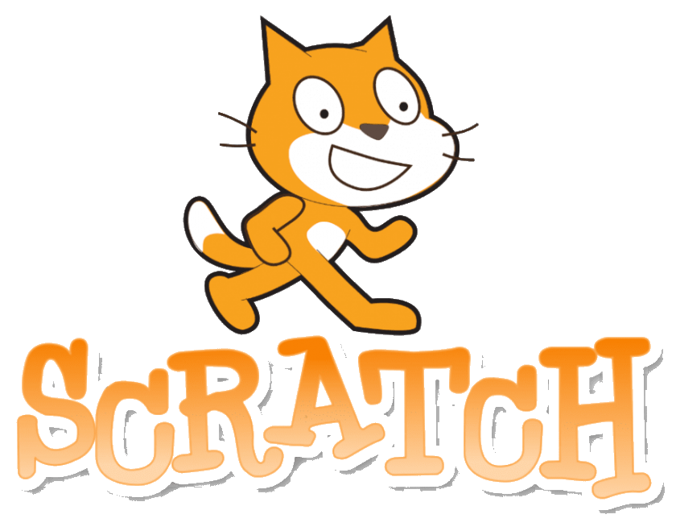
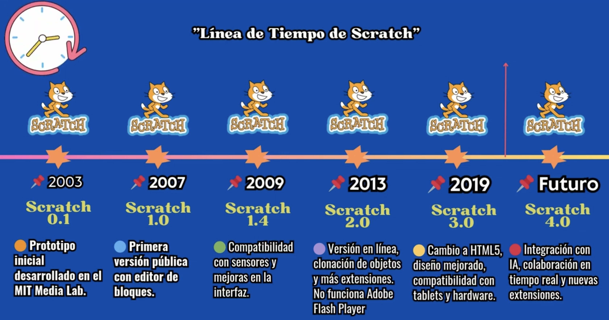
El bloque Iniciar es imprescindible para ejecutar una cadena de programa en WeDo 2.0. “Ejecutar” significa iniciar una serie de acciones hasta su finalización.
Los bloques de programación se emplean en el software WeDo 2.0 para construir una cadena de programa. En lugar de código basado en texto se usan estos bloques con símbolos.
Una cadena de programa es una secuencia de bloques de programación. El último bloque del programa marca el final de este.
Cuando los estudiantes exploran la programación por primera vez, probablemente alineen el mayor número de
bloques posible en el panel de programación.
Para llevar a cabo una idea que tengan en mente, deberán colocar sus bloques en orden de manera que se
ejecuten uno tras otro o de forma simultánea.
Una secuencia es lineal cuando los bloques se colocan uno tras otro de manera lineal. El software LEGO® Education WeDo 2.0 ejecutará una acción tras otra en el orden en el que se han colocado los bloques.
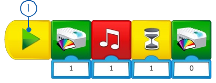
Una secuencia paralela debe utilizarse cuando los estudiantes quieran realizar dos o más acciones al mismo
tiempo.
En este caso, las acciones deben colocarse en cadenas de programa diferentes y ejecutarse a la vez, empleando
diferentes técnicas disponibles en WeDo 2.0.
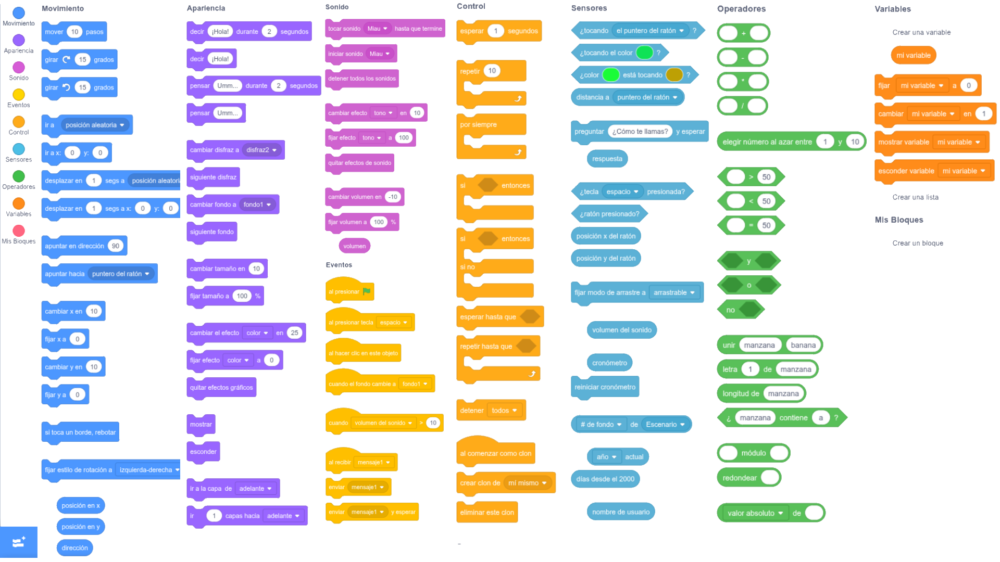
En el desarrollo de cadenas de programa como parte de sus soluciones, los estudiantes organizarán una serie de acciones y estructuras que darán vida a sus modelos.
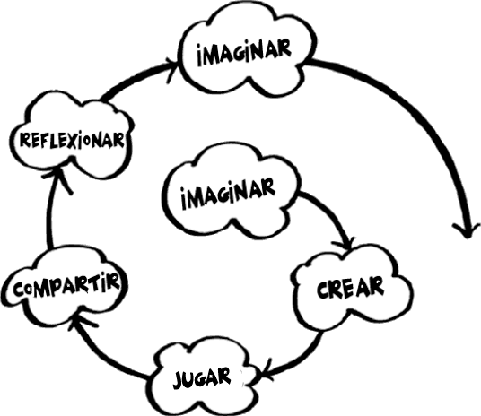
Una salida es algo que puede controlarse mediante un programa escrito por los estudiantes.
Algunos ejemplos de salidas para WeDo 2.0 son la activación y la desactivación de sonidos, luces, pantalla y
motores rotatorios.
Una entrada es una información recibida por un ordenador o un dispositivo. Puede introducirse mediante el
uso de sensores en forma de valor numérico o textual.
Por ejemplo, un sensor que detecta o mide algo (como la
distancia) convierta este valor en una señal de entrada digital para que pueda usarse en un programa.
Los estudiantes pueden indicar a su programa que espere a que ocurra algo antes de continuar la secuencia de
acciones.
Los programas pueden esperar un periodo de tiempo concreto o esperar a que el sensor detecte algo.
Los estudiantes pueden programar acciones que se repitan para siempre o durante un periodo de tiempo específico.
Las funciones son un grupo de acciones que deben usarse conjuntamente en situaciones específicas.
Por ejemplo, el grupo de ladrillos que podría utilizarse para crear un parpadeo de luz se llamaría “la función
parpadear”.
Los estudiantes usan las condiciones para programar acciones que solo deben ejecutarse en determinadas
circunstancias.
Crear condiciones en un programa implica que alguna parte de este no se ejecutará jamás, a menos que se cumplan
las condiciones.
Por ejemplo, si el sensor de inclinación se inclina hacia la izquierda, el motor arrancará; si el sensor se
inclina hacia la derecha, el motor se detendrá. Si el sensor de inclinación no se inclina nunca hacia la
izquierda, el motor nunca arrancará, y si nunca se inclina hacia la derecha, el motor nunca se detendrá.
Un engranaje es una rueda dentada que gira y que hace que otra pieza se mueva.
Las ruedas de engranaje se encuentran, por ejemplo, en una bicicleta, conectadas por medio de una cadena.
Un “tren de engranajes” es cuando los engranajes se disponen directamente uno junto a otro.
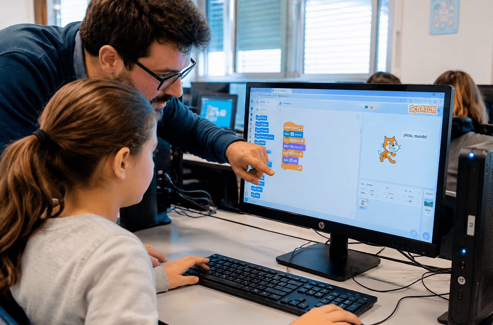
Tren de subida:
Un engranaje grande acciona un engranaje pequeño para generar un número mayor de giros.
Tren de bajada:
Un engranaje pequeño acciona un engranaje grande para generar un número menor de giros.
Un engranaje cónico es un engranaje en ángulo que se puede colocar de manera perpendicular con otro engranaje, lo que cambiaría el eje de rotación.
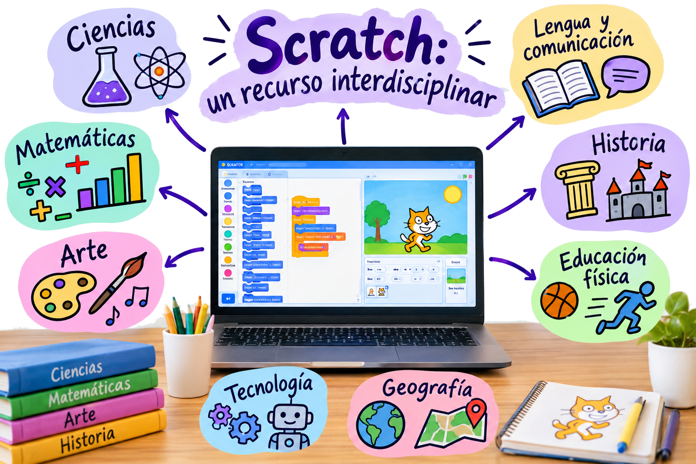
Un bastidor es un elemento plano con dientes que se conecta a un engranaje circular, lo que se conoce
habitualmente como un piñón.
Este par de engranajes cambian el movimiento de rotación habitual, ya que el engranaje gira en movimiento
lineal.
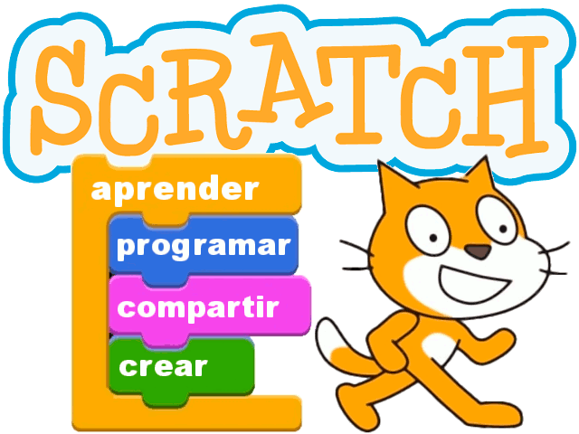
Un tornillo sin fin es una ranura en espiral continua, parecida a la de un tornillo, que se conecta a un
engranaje.
El tornillo sin fin está diseñado para hacer girar un engranaje normal, pero el engranaje no puede hacer
girar el tornillo sin fin, por lo que funciona a modo de freno.
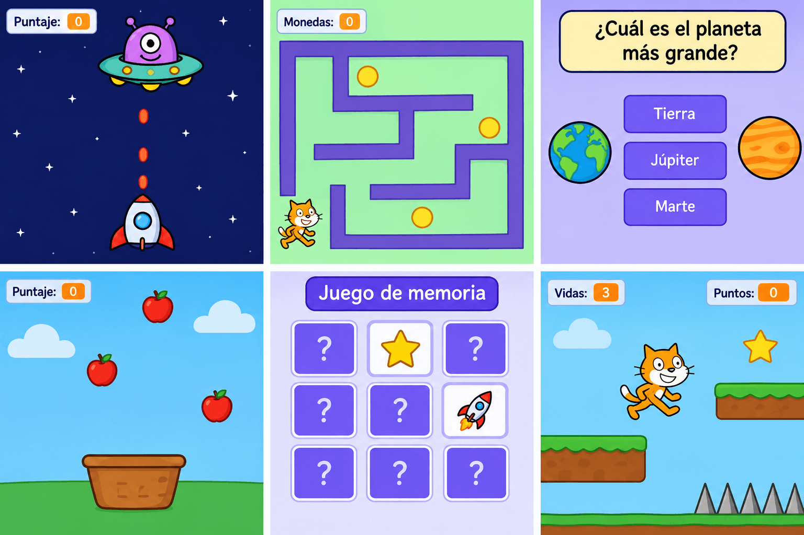
Un travesaño conectado a una pieza giratoria se convierte en un pistón.
Un pistón es una pieza móvil de una máquina que transfiere la energía creada por el motor en un movimiento
ascendente y descendente o de avance y retroceso.
El pistón puede empujar, tirar o impulsar otros elementos mecánicos de la misma máquina.
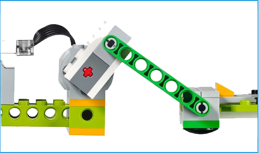
La rueda es un elemento circular que gira sobre un eje para generar un movimiento de propulsión.
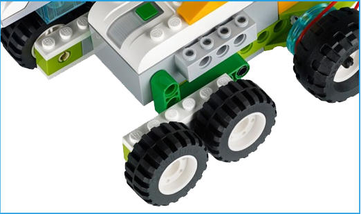
La polea es una rueda con una ranura sobre la que descansa una correa.
La correa es como una pequeña cinta de caucho que se conecta a la pieza del modelo que gira para transferir
la rotación a otra pieza del modelo.
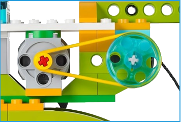
Polea de subida:
Una polea grande acciona una polea pequeña para generar un número mayor de giros.
Polea de bajada:
Una polea pequeña acciona una polea grande para generar un número menor de giros.
Polea girada:
Se usa para crear ejes paralelos, pero que giran en direcciones opuestas.
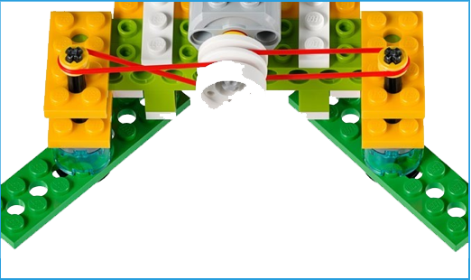